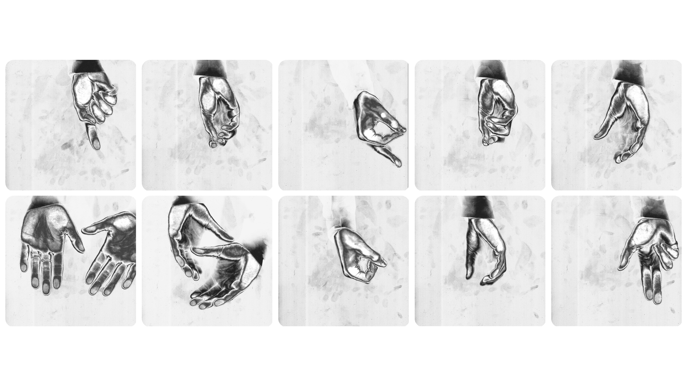
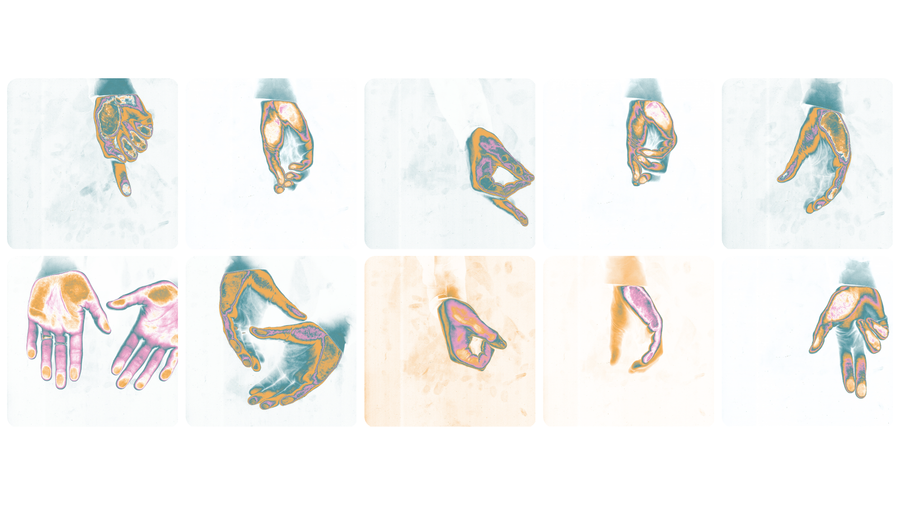
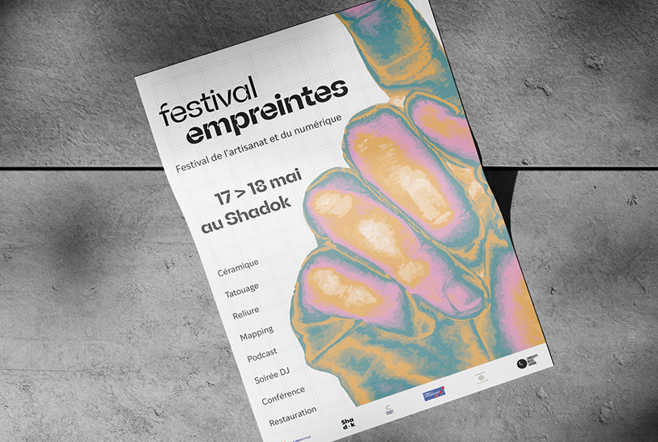
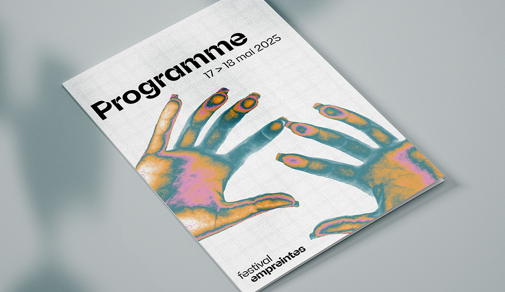
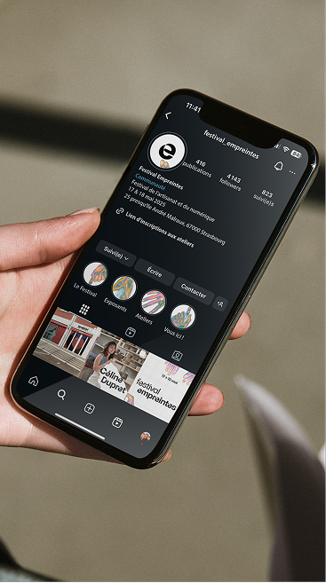
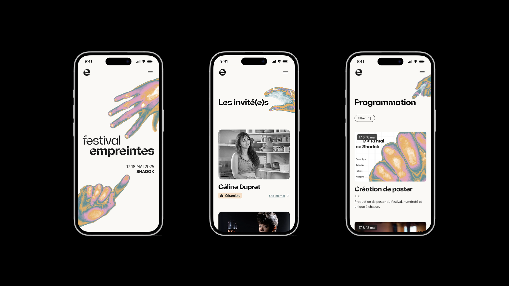

En réponse à l'appel d'offre pour la refonte du Craft Market de Strasbourg, notre équipe a proposé de rebaptiser l'événement « Empreinte Festival » — un nom qui symbolise à la fois la trace laissée par le geste artisanal et l'empreinte numérique. Un vrai brief client, avec présentation, retours et enjeux réels.
Au cœur de l'identité : la main. Outil premier de l'artisan, nous l'avons soumise au processus du scan numérique. Ce traitement génère une esthétique singulière où le grain de la peau rencontre le pixel et le glitch. Les couleurs, appliquées comme des filtres thermiques, créent une atmosphère chaleureuse et immersive. Un branding 360° décliné en affiches, signalétique, goodies et motion design.



